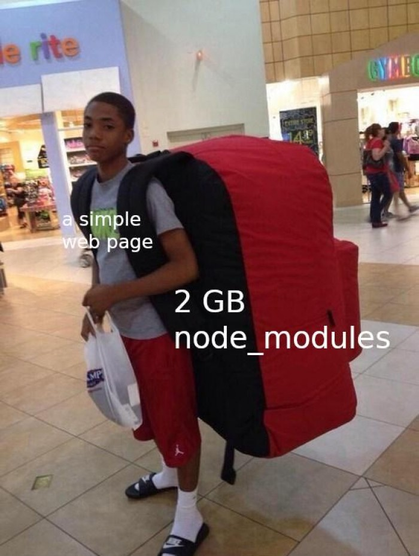
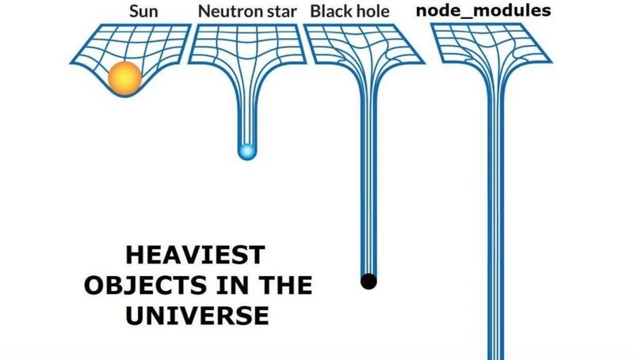
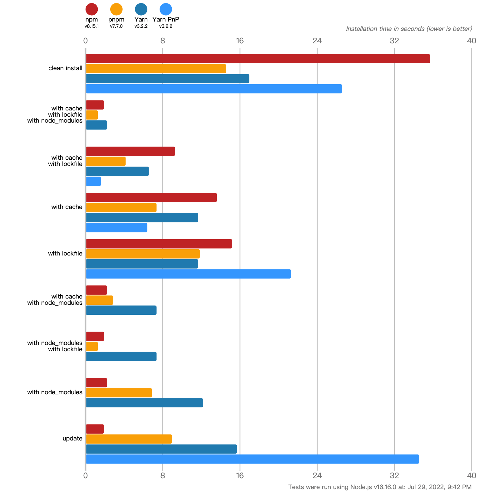

简介

pnpm和npm/yarn本质是相同, 都是一个包管理工具, 但相对npm和yarn而言具有如下特征:
- 节约磁盘空间并提升安装速度
- 创建非扁平化的 node_modules 文件夹
这是官方所表达设计pnpm的初衷!
依赖管理方式
嵌套结构
npm1/npm2采用的是和package.json文件中依赖与次依赖形成的树形结构而生成的node_modules目录结构, 再通过递归安装所有次级依赖所依赖的模块.
以项目中安装了 A | B 两个模块, A 模块依赖了 C | D 模块为例所生成的目录结构将如下所示:
1 | node_modules |
对于这种各模块间互不关联的情景下如果不出意外这将是一个不错的解决方案, 但意外还是发生了.
以项目中安装了A | B 两个模块, A | B 同时依赖了 C | D 模块为例所生成的目录结构如下所示:
1 | node_modules |
此时我们就可以发现2个问题
- 相同包重复安装, 将导致项目体积过大, 占用了过多的磁盘空间
- 依赖层级较深时引用地址将变得很长, 在window下将出现一些莫名问题.
社区里面也出现了诸如此类的“嘲讽”图片

扁平结构
在这个阶段(目前npm和yarn都处于这个阶段), npm和yarn都将依赖进行了扁平化的管理即将依赖都提出到node_modules目录下, 不再有很深层次的嵌套关系.
以上方 A | B 模块都依赖 C | D 模块为例所生成的目录结构如下所示:
1 | node_modules |
对于扁平化后的目录结构, 根据 node require 的加载机制，会不停往上级的node_modules当中去找，如果找到相同版本的包就不会重新安装，这解决了大量包重复安装的问题，而且依赖层级也不会太深。
同样, 理想很丰满, 现实很骨感, 在我们平时使用中不可能会这么“规矩”.
比如我们在 B 模块中使用的是 D@1.0.1 这个版本而不是 D@1.0.0 这个版版, 新的流程将会是如下所示
1 | node_modules |
亦或者
1 | node_modules |
但由此却又诞生了“幽灵依赖” 和 “依赖分身”以及node_modules的结构不稳定性
幽灵依赖
幽灵依赖是指在 package.json 中未定义的依赖，但项目中依然可以正确地被引用到。如例子中的 C | D 依赖
依赖分身
依赖分身是指出现重名但不同版本的依赖安装, 此时的模块只能重复安装到模块所依赖的node_modules下, 若存在多个不同模块依赖与根node_modules不同的版本时将重复安装(此时和npm1/2嵌套时期生成的结构相同)
结构不确定性
由于不同的操作系统对依赖的安装顺序不同, 在安装依赖时不同系统间将诞生不一样的目录结构. 而解决方案就是lock文件, 无论是package-lock.json(npm@5.x后出现)还是yarn.lock, 都是为了稳定的结构而诞生的.
pnpm
符号链接
符号连接又称为软链接, 类如window系统中的 快捷方式, 对符号链接文件进行读写的程序会表现得直接对目标文件进行操作.
pnpm 的 node_modules 布局就是使用符号链接来创建依赖项的嵌套结构。在node_modules下存在一个全局的缓存池 .pnpm 文件夹, 在这个文件夹中将存放通过硬链接拷贝过来的真实文件, 通过符号连接访问时访问的其实是.pnpm中存在的目标文件.
还是以 A | B 模块都依赖 C | D 模块为例所生成的目录结构如下所示:
1 | node_modules |
如果在 B 模块中使用的是 D@1.0.1 这个版本而不是 D@1.0.0 这个版版, 新的流程将会是如下所示
1 | node_modules |
这里借用一下官方的关联关系图

由上方代码结构和官方关系图可得知如下结果:
- 相同的依赖只会安装一次, 不同模块间相同的依赖, 通过符号链接进行关联. 解决了重复安装、依赖分身的问题.
- 根节点只存在package.json中所注入的依赖, 解决了幽灵依赖的问题.
- 是用符号链接的方式即解决了依赖路径过长的问题.
所以基于链接的优势, pnpm 的安装速度会比npm/yarn快近2倍的优势, 同时也大大节约了磁盘的占用空间
对比图
针对上方一系列的操作后, 效果如下:

是否pnpm就是最好的解决方案?
首先任何一个解决方案都是当下最好的一个解决方案, 但并不代表这将是最终方案. pnpm依旧存在以下问题:
- 符号链接兼容性. 存在符号链接不能适用的一些场景，比如 Electron 应用、部署在 lambda 上的应用无法使用 pnpm
- 子依赖被提升到同级的目录结构. 虽然由于 Node.js 的父目录上溯寻址逻辑，可以实现兼容。但对于类似 Egg、Webpack 的插件加载逻辑，在用到相对路径的地方，需要去适配
- 不同应用的依赖是硬链接到同一份文件，如果在调试时修改了文件，有可能会无意中影响到其他项目
包管理器的探索
Deno
Node.JS作者Ryan在JSConf上曾表示node_modules是他对Node的十大遗憾之一, 并在后续介绍并推荐了自己的新作Deno.
在Deno中不需要package.json和node_modules，而是将引入源、包名、版本号、模块名全部塞进了 URL 里，通过URL导入依赖并进行全局统一缓存，不仅节省了磁盘空间，也优化了项目结构。
1 | import * as asserts from 'https://deno.land/std@0.125.0/testing/asserts.ts'; |
因此Deno中没有包管理器的概念，对于项目中的依赖管理，Deno提供了这样一种方案。由开发者创建dep.ts，此文件中引用了所有必需的远程依赖关系，并且重新导出了所需的方法和类。本地模块从dep.ts统一导入所需方法和类，避免单独使用URL导入外部依赖可能造成的不一致的问题。
1 | // dep.ts |
yarn Plug’n’Play(yarn PnP)
yarn 也意识到了在之前版本里存在的问题, 于是在2020年1月发布了v2版本的重大更新, 其中一项重要更新就是 Plug’n’Play（Plug’n’Play = Plug and Play = PnP，即插即用）。
现阶段 yarn install 操作会执行以下 4 个步骤：
- 将依赖包的版本区间解析为某个具体的版本号
- 下载对应版本依赖的 tar 包到本地离线镜像
- 将依赖从离线镜像解压到本地缓存
- 将依赖从缓存拷贝到当前目录的 node_modules 目录
其中第 4 步同样涉及大量的文件 I/O，导致安装依赖时效率不高（尤其是在 CI 环境，每次都需要安装全部依赖）。
PnP 的具体工作原理是: 作为把依赖从缓存拷贝到 node_modules 的替代方案，Yarn 会维护一张名为 .pnp.js 文件的静态映射表，该表中包含了以下信息：
- 当前依赖树中包含了哪些依赖包的哪些版本
- 这些依赖包是如何互相关联的
- 这些依赖包在文件系统中的具体位置
.pnp.js 文件中还包含了一个特殊的 resolver，Yarn 会利用这个特殊的 resolver 来处理 require() 请求，该 resolver 会根据 .pnp.js 文件中包含的静态映射表直接确定依赖在文件系统中的具体位置，从而避免了现有实现在处理依赖引用时的 I/O 操作。